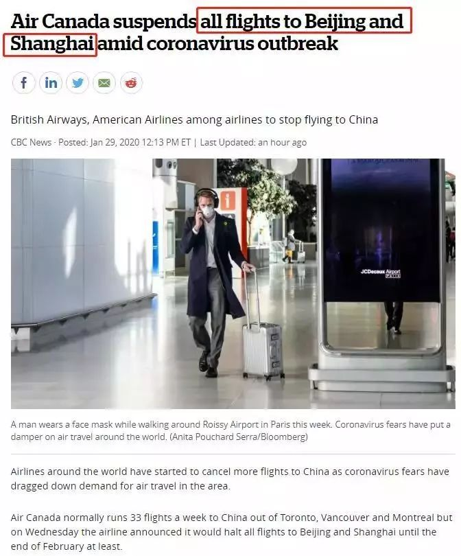
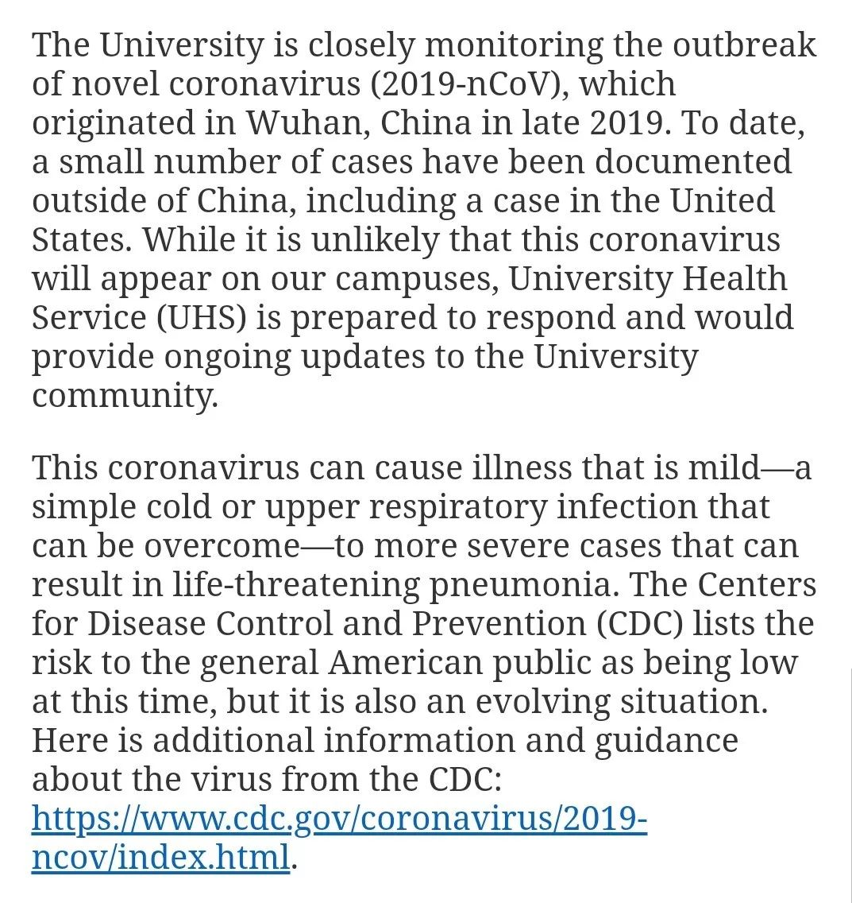
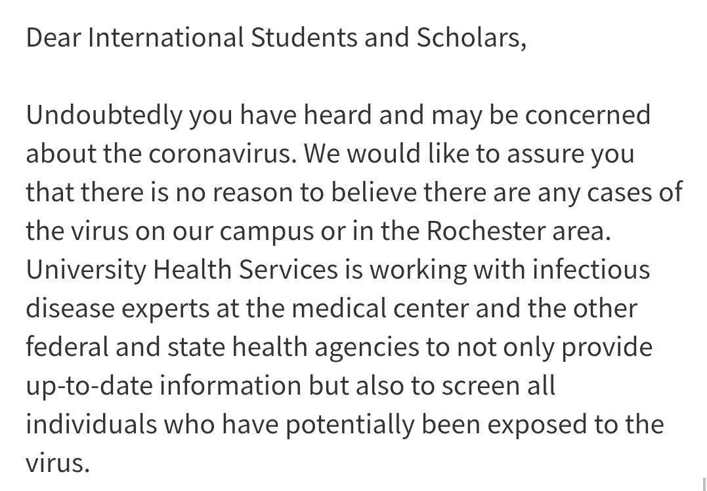
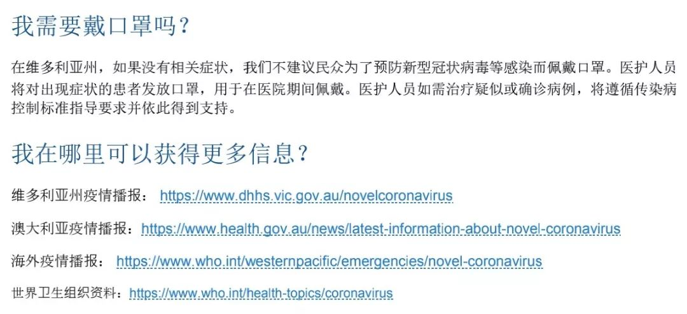
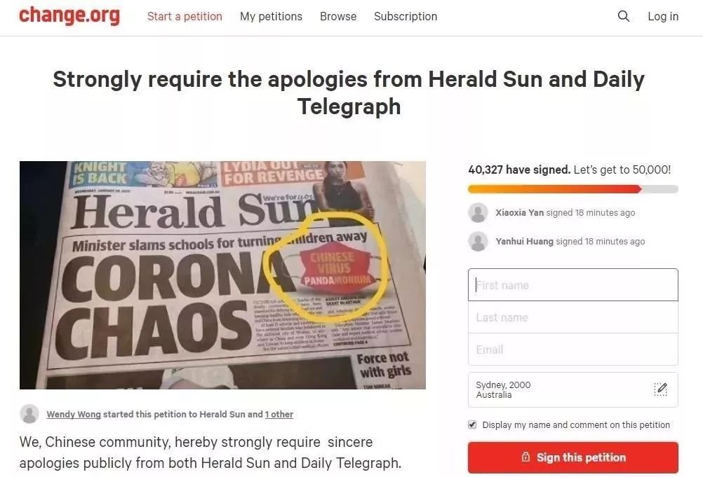

「武汉加油」：疫情中的日本援手｜特别报道
原文链接 备份链接 关注并星标消费新声 不错过泛消费任何最新动态 尤其在近十年，尽管国际形势时有起落，但两国的经济和民间交流正在不可逆地粘连到一起，相似的传统文化背景让我们之间形成对照，成为几乎不可能被斩断的近邻。 作者 | …
大家好，我是田静。
新型冠状病毒疫情发生后，除了国内民众举全国之力抗击病毒外，海外华侨华人也纷纷发起募捐，用自己的方式表达对祖国疫区同胞的牵挂。
但是，随着疫情影响的加剧，继英国暂停中英航班后，已经有20个国家，作出了类似的决定，这个代价显然太过沉重。
国际形势瞬息万变，每次国家发生重大公共事件，华人在海外遇到的情况，就会变得更加复杂多样。
17年前的非典经历，让很多海外华人记忆犹新，中餐馆倒闭，中国超市冷清，华裔被歧视，国家被歧视。
这一次，他们又将会遭遇什么样的经历，是感受到异国他乡的温暖，还是要以华人身份，经受又一次的伤害？
我们找了几个国家的海外华人，聊了聊他们正在经历的当下。
天灾面前，没有什么种族、国界和文化的隔阂，唯有如此，作为一个整体的“人类”，才能够持续走下去。

恐慌加剧，对华人种族歧视情绪蔓延
加拿大
陈川 华人工程师
目前加拿大有3例。这次事件对我影响蛮大的，我本来计划3月1日要去四川参加表妹女儿婚礼，然后去昆明，3月底到北京见朋友，四月初回加拿大报税。
现在不仅表妹家女儿的婚礼取消了，加拿大外交部也宣布，将包机将滞留在疫区的加拿大人带回家，并且提升中国的旅游警告级别，而且，加航今天也突然宣布，要全面停飞北京和上海的所有航班。
反正我是回不去了，上半年的计划得重新做。
我回不去倒霉，我回去了的朋友遭遇也很窘迫，他原计划春节回中国贵州待10天，刚回到中国，疫情严重赶快买了机票回撤，没想到回来后的待遇，还不如国内。
朋友下了飞机后去见移民官，刚要摘口罩，移民官身体往后移了近半米，慌忙阻止，“不用不用摘，我在电脑上就能看见你的照片”，问他是否从武汉来？还装腔作势地咳了两声，赶紧挥手让他过了。
当时，朋友老婆去机场接的他，上车前从头到脚喷酒精，车内又喷了一遍，全程带口罩。
朋友到家后，在车库就被脱得精光，全部衣裤直接进洗衣机，电梯到地下室，高温热水洗澡后干蒸半小时，才吃了一片披萨，为了消毒更彻底，朋友还喝了两个80度的台湾高粱酒。
女儿是只听其声不见其人，儿子5米外见了一面，上楼就再也不下来了。没办法，为了不给大家添乱，朋友自动在地下室闭关10天，全靠勇敢的老婆每天送吃送喝，果然是患难夫妻见真情。

△ 加拿大航班停飞
怎么说呢，加拿大自从经历了华为公主孟晚舟事件后，大家对中国人的态度，变得很复杂。这次疫情网上的声音也很嘈杂，各种消息都有。
特别是多伦多接连出现两起冠状病毒感染病例之后，恐慌情绪开始蔓延，导致针对华人社区的种族主义情绪加剧。
而且听说，这种疾病始于武汉的一个海鲜批发市场，网上的信息都说“在那里，商贩们合法地在狭小的空间里出售活体野生动物。”
一时间，加拿大爱护动物和担心病毒感染的情绪迅速发酵。在多伦多，许多市民把矛头对准了华人社区。他们在网上发表各种充满无知和种族主义的言论，借着网络提供的匿名保护进行人身攻击。

△ “我*恨透了这些中国人！先是维族人的事，现在又通过他们肮脏的食物让我们生病，我希望他们下地狱！”
作为一位华人，这时候心理肯定很不好受。当然在这些极端的情绪里，也有一些理性的声音，说发表种族主义言论并不能阻止病毒的传播，良好的卫生习惯却能创造奇迹。
人和人是不一样的，我们华人圈就在转一所加州小学，发给学生家长的邮件：
每个人都会生病，不要因此而孤立中国人和任何你认为与中国有联系的人，更不要歧视生病的人，因为这样会让生病的人为自己生病而羞耻，从而隐瞒病情，不保护他人。我们防的是病毒，而不是中国人。越是危难之时，越需要冷静，理智，人性，团结。
学校没有给孩子灌输不好的情绪，这是让我欣慰的。
总之，我不想再看见我的中国和我的加拿大再次承受痛苦，17年前的非典经历，让每一个身在多伦多的华人记忆犹新，中餐馆倒闭，中国超市冷清，华裔被歧视，国家被歧视。
我们都是经历过大灾大难过来的人，历史的悲剧或许会重蹈覆辙，但同样人们打败困境的胜利也会重新上演。
中国一定会打赢这场防疫之战。

现在外国人看见中国人，就像中国人看见武汉人一样
以色列
Joshua 学生
我在以色列，这边最近的中国游客已经没有那么多了。
今天刚知道，以色列航空公司暂停了到中国的所有航班，直到3月25日，未来应该不会再有中国游客来以色列。
我一直关注国内疫情信息，身边很多外国朋友也都听说过。但在这，除了口罩被抢光外，什么都没有变化。之前有个旅游团的领队请我朋友帮忙买500个口罩，一个也没买到。
我女朋友在当地另外一个语言学校，学希伯来语，一周两节课。以往上课，她身边很多同学，但这周二（28号）去上课的时候，身边一个人也没有，大家都自动离她远远的，生怕被感染。
事实上，我们一直在这上学，一年多没离开以色列了。
一个泰国朋友跟我说：现在外国人看见中国人，就像中国人看见武汉人一样。
我特别能理解这种恐慌，毕竟我在街上遇到有中国游客问哪里能买到口罩时，也很警惕，很怕他们是从武汉来的。
对中国技术表示肯定，至少三条日本做不到
日本
俞天任 旅日工程师
我叫俞天任，旅日工程师，也是一名专栏作家。
我是今年1月18日才从中国回日本，这次的新型肺炎我在中国时就知道了，应该是网上的各种议论，虽然不很清楚，但是已经知道因为冠状病毒引起了肺炎，当然没有想到会发展现在的样子。
我知道的信息都是正规渠道所公开的信息，其实到了现在也已经不存在新闻管制了，而且基本上走上了正轨，包括武汉市内的朋友传出来的信息，也不像前几天刚封城时那么沮丧了。
这次的肺炎，湖北省和武汉市在一开始确实做得相当差。封锁消息，胡乱抓人不说，还大肆宣扬抓人的消息，现在被抓的人又成了英雄，也是让国外的人看得大跌眼镜。
政府的错误决策，导致事态实在无法收拾，才由第三者的钟南山院士来发声。不管钟南山院士的发声有什么背景，反正完全暴露了湖北省和武汉市的治理无方。
日本因为离中国很近，而且恰逢春节，大量中国游客访日（估计有70万人），所以对这次肺炎十分重视。
在日本电视还是主要媒体，所有频道都用了大量时间来报道和讨论这个问题。包括请政府官员谈对策，请专家解释问题，从中国网络上摘取信息，以及对其他各国的动态及时跟进，一般来说还是比较全面。

△ 日本报道中国政府动员了1000名医生去疫区
日本比较讲究政治正确，媒体上很难看到不正确的言论，但是网民的反应就各种各样了。基本上对中国政府的应对，特别是初始阶段的应对从媒体到网民都持批判态度。
但了解中国的人士都知道，到了现在，问题其实已经基本解决，离完全解决也就是时间问题了。
尽管有了不同的声音，对于中国在技术上的表现，日本基本上还是持正面态度，比如短时间就解析了病毒基因，“突贯工事”建起了传染病医院，以及果断地封锁了疫区等。他们承认这都是日本人做不到的。
昨天日本TBS卫视的“报道1930”中，参议员松川瑠衣还特别说了这事，这人是个保守派，平时对华并不持好感，这次公开承认了中国的这些技术成就，同样是保守媒体的富士卫视，也同意这三条，这还挺难得的。
△ 松川瑠衣
对比一下数据，2009年美国的猪流感，首例病例于3月下旬开始出现，疾病预防控制中心于4月17日识别出该病。要知道，美国疾病预防控制中心，是全球最佳的传染病研究机构，每年预算110亿美元。
2014年的西非埃博拉病毒流行期间，从获得第一个患者样品到鉴定完整的基因组序列，他们花了2个月的时间，然后又花了6周的时间来发布它。
而这次的新型肺炎冠状病毒，中国从第一个患者样品到完成病毒鉴定和测序，历时1周。
从这个角度看，医学技术的进步的速度，确实越来越快。
可能更让日本政府羡慕的是“封城”行动，数千万人被锁定在一个区域来做检疫，众所周知，隔离是预防传染病最有效的方式，但这样大规模的封城行动，日本绝对做不到的，因为宪法就不允许。
还有10天搭建两个医院，容纳上千张病床，数千医务工作者，这样的效率也是让日本民众羡慕不已，这不仅是人力、物力、财力的集中展示，更需要强大的行政手段才能办到。
对于灾区的民众，日本人基本上都是抱同情态度。
但他们对于中国游客的态度则十分矛盾，一方面害怕中国游客会带来病毒，另一方面也知道中国游客的接待行业效益下滑会带来一系列的社会问题。
所以虽然有人在嘀咕禁止中国人入境，但并不形成主流民意，反而大家都忧虑中国禁止组团出国，会给日本经济带来什么问题。
连日来东京证券市场股市大跌，有人预算因为中国的肺炎会把日本的GDP下拉0.34个百分点。
总之日本社会希望中国能够早日解决这个问题，拖长了对全球的经济都有坏影响。

武汉学生感冒，引来学校一阵恐慌
美国
窦松石 罗彻斯特大学，光学研究生
我是12月29号放假回国的，1月13号回到学校。当时已经关注到国内有疫情相关的报道，但并没有特别重视。
直到1月23号，武汉封城，事件才真正引起大家注意。
1月23号那天，我收到一封来自我们学院教授的邮件，告诉我们由于疫情形势严峻，张希成教授决定取消原定于大年初一的春节聚会。
据说张教授往年每年都会组织光学院的学生春节一起团聚包饺子，和大家一起庆祝新年。
24号的时候，我收到学校校医院的邮件。告知我们学校正在密切关注2019年末起源于中国武汉的新型冠状病毒，这种病毒可能导致轻度疾病，比如感冒，上呼吸道感染，严重可能引起危及生命的肺炎。
但是同时校医院也告诉我们，这种病毒不太可能出现在我们校园里，因为中国境外只有少量发病案件，美国疾控中心（CDC）列出目前该病对美国公众的风险比较低。但情况还在不断发展，学校还是做好准备随时应对突发情况。

△ 24号的邮件截图
当时他们正在主动联系曾经可能前往武汉或靠近疫情区域的同学沟通，提醒大家如果曾受感染，或有发烧，咳嗽，呼吸急促的症状，随时联系校医院。
邮件还提到，美国卫生部官员正在对从武汉到美国洛杉矶，旧金山，纽约肯尼迪机场，芝加哥奥黑尔机场和亚特兰大国际机场的旅客进行筛查。接下来的几天里，所有从武汉飞往美国的航班都将被改道到这几个机场，从这些机场入境。
25号春节当天，我们学院院长发了一封邮件给所有中国留学生，祝福大家春节快乐。也提到了武汉疫情的问题，邮件中说，我们中的很多人可能会担心远在中国的亲人，但希望大家能感受到光学院大家庭的支持。老师和同事们会帮助我们一起度过困难时期，并且这场疾病很快就会过去。

△ 25日邮件
然后就是27号，我又收到了来自留学生办公室的邮件，同样是关于武汉疫情的。
这应该算是一封「辟谣」邮件，希望我们不要恐慌。
1.经学校筛查，没有发现任何确诊案例
2.学校取消光学研究所的实验室会议这个决定，与肺炎病毒或感染没有任何关系。

△ 27日邮件
邮件说我们学校或整个罗彻斯特地区都没有任何肺炎病例发生，而且校医院正在与医疗中心的传染病专家以及其他卫生机构合作，提供关于肺炎的最新信息，筛选所有有可能接触过该病毒的人。同时提醒大家勤洗手，生病时留在家中，避免与他人接触。
这封邮件可能与之前学校的传言有关，我听说过学校出现一个疑似案例，当事人来自武汉，是我们光学院的博士。但至今这些消息都没有确切来源，也只是大家口口相传而已，官方这封邮件可能就是为了打消大家的恐慌。
我估计可能只是有武汉同学感冒而已，引起大家的恐慌造谣。
我们学院有蛮多学生来自武汉的，大家很关注这件事，超市里的口罩已经卖脱销了。我们学院很多中国留学生都戴着口罩，但外国学生几乎没有人戴口罩的。
可能离他们还是太远了，就像如果巴西发生了什么大的流感之类的，我们在国内可能也不会太关心，甚至有什么样的应对措施。尤其是罗彻斯特离中国已经有12个小时的时差了，距离很远，过来的可能性很小，大家不觉得会发生在我们身边。
包括我自己也是托朋友买了口罩，但一直没怎么戴。

确诊8例，我却买不到口罩了
澳大利亚
Sherry 老师
我在澳大利亚墨尔本工作，之前是通过微博热搜知道的肺炎的，那天钟南山说新型冠状病毒可以人传人，后来我就关注了很多国内的医学科普，了解了一些肺炎相关的信息。
前天我去上班时，公司前台（亚洲人）戴了口罩，但是那种防花粉的普通口罩，因为别的都买不到了。
由于之前澳大利亚山火，这里的口罩基本已脱销，我这种住闹市区的更是买不到，ebay上订货要2月12号到。
我认识的一些做服务业的朋友，比如银行，购物中心等，公司已为他们订购了口罩，并允许他们戴口罩上班。
据我所知，澳洲目前确诊8个，都在医院治疗中。但其实路上基本没人戴口罩，澳大利亚维多利亚州政府发布的「（2019-nCoV）接触以及与 2019-nCoV 确诊患者接触之后须知信息」文件中也提到：如果没有相关症状，不建议民众为了预防新型冠状病毒等感染而佩戴口罩。

△ 澳大利亚维多利亚州政府发布的，（2019-nCoV）接触以及与 2019-nCoV 确诊患者接触之后须知信息
关于肺炎，我看澳大利亚媒体报道的还算客观，并且一直保持非常自信乐观的态度。只是昨天澳洲本地报纸《太阳先驱报》在头版的一篇报道中，在醒目位置上称呼新型冠状病毒肺炎（Coronavirus）为「中国病毒」（China virus）。

△ 澳洲本地报纸《太阳先驱报》头版报道
《悉尼每日邮报》也在头版上用粗体大字标题写着“中国孩子待家里”(CHINA KIDS STAY HOME) ，这引起了很多澳洲华人的不满和抗议。
对于许多春节假期没有回中国的华人孩子是不公平的，并且可能导致这些华裔孩子在学校遭到校园霸凌。

△《悉尼每日邮报》头版
事件发酵后，很多人在请愿网站Change.org上发起请愿，他们认为这两个标题都含有种族主义歧视，违反了澳大利亚的种族歧视法，对中国社会造成不良影响。并要求两家媒体公开道歉，不少华人积极响应。截止1月30日早上10点，已经有超过40000人签名要求道歉。

△ 华人联名
最近在在华人社区的强烈要求下，可能也是出于安全考虑，会让近期从中国回来的人自觉在家隔离14天。华人社区也发起了一些互助活动，比如帮近期回国隔离在家的人购物、买菜等等。
肺炎这事牵一发而动全身，涉及范围太广，影响太大了。
我希望治愈的病例越来越多，尽快结束这场战役。
为中国女性安全 提供专业解决方案
▬ ▬ ▬ ▬ ▬ ▬ ● ▬ ▬ ▬ ▬ ▬ ▬
女 孩 别 怕
_未经授权 禁止转载
_
欢迎分享到朋友圈
原文链接 备份链接 关注并星标消费新声 不错过泛消费任何最新动态 尤其在近十年，尽管国际形势时有起落，但两国的经济和民间交流正在不可逆地粘连到一起，相似的传统文化背景让我们之间形成对照，成为几乎不可能被斩断的近邻。 作者 | …
原文链接 备份链接 【财新网】（记者 黄蕙昭）从全国看，疫情还处于早期散发阶段。国家卫健委主任马晓伟在1月26日下午国务院新闻办举行的发布会上表示。截至1月26日20时，中国确诊新型冠状病毒肺炎病例2058例，其中湖北1052例，而非湖 …
原文链接 备份链接 这注定是一个难捱的春节。 截至1月23日24时， 全国确诊新型肺炎病例830例， 死亡25例。 截至1月23日晚，中国新型肺炎疫情地图（来源：丁香医生） 同时，国际确诊案例也陆续出现。 截至1月23日，数据如下： 泰 …
原文链接 备份链接 其他科室要尽量把医用口罩和防护服留给隔离病房的医护人员使用 2020年1月22日，在湖北省政府首场新型冠状病毒感染肺炎疫情防控工作新闻发布会上公布，新型冠状病毒感染的肺炎已致湖北17人死亡。图/新华 文 |《财经》 …
原文链接 备份链接 发热门诊排起长龙的就诊队伍似乎在宣告，这座城市正面临一次巨大的挑战。 全文4742字，阅读约需9分钟 ▲湖北各地出现口罩防护服等防疫物资短缺 拟请求国家支援。新京报我们视频出品（ID：wevideo） 距离除夕还有3 …